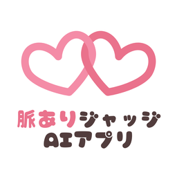

脈ありAIジャッジApp Store でアプリを最新版に更新し、通信環境の良いところでもう一度お試しください。バージョン2.0以降では、判定に失敗しても回数は減りません。
毎日1回、無料で判定できます（日付が変わると戻ります）。回数がないときは、広告を最後まで見ると1回分が追加されます。追加された回数は、判定に失敗しても残ります。
バージョン2.0以降では、広告で得た回数は「追加」として残っています。入力画面でもう一度判定ボタンを押してください。広告は出ません。
選んだ写真と補足は、判定のためにAI（Google の Gemini）へ送信されます。アプリにも運営者のサーバーにも保存しません。詳しくはプライバシーポリシーをご覧ください。
不具合の報告やご質問は、GitHub の Issues からお送りください。端末の機種、iOS のバージョン、アプリのバージョン、表示されたメッセージを書いていただけると助かります。
Update the app to the latest version on the App Store and try again with a good connection. From version 2.0, a failed analysis is not counted.
You get one free analysis every day (it refreshes when the date changes). When you have none left, watch an ad to the end to get one more. An extra analysis is kept if the analysis fails.
From version 2.0, the analysis you earned is kept as "Extra". Tap the analyze button again on the input screen. No ad will play.
The photos and notes you choose are sent to AI (Google's Gemini) to create the analysis. They are not stored in the app or on our server. See the Privacy Policy.
To report a problem or ask a question, please open an issue on GitHub Issues. Including your device model, iOS version, app version and the message you saw helps a lot.
请在 App Store 将应用更新到最新版本，并在网络良好的环境下重试。2.0及以上版本中，判定失败不会扣除次数。
每天可免费判定1次（日期变更后恢复）。没有次数时，完整观看广告即可增加1次。增加的次数在判定失败时会保留。
2.0及以上版本中，通过广告获得的次数会保留为“额外”。请在输入页面再次点击判定按钮，不会再播放广告。
你选择的照片和补充说明会发送给AI（Google 的 Gemini）用于判定，不会保存在应用或运营者的服务器中。详情请查看隐私政策。
如需反馈问题或咨询，请通过 GitHub Issues 联系。请附上设备型号、iOS 版本、应用版本和显示的提示信息。
請在 App Store 將 App 更新到最新版本，並在網路良好的環境下重試。2.0以上版本中，判定失敗不會扣除次數。
每天可免費判定1次（日期變更後恢復）。沒有次數時，完整觀看廣告即可增加1次。增加的次數在判定失敗時會保留。
2.0以上版本中，透過廣告獲得的次數會保留為「額外」。請在輸入頁面再次點擊判定按鈕，不會再播放廣告。
你選擇的照片和補充說明會傳送給AI（Google 的 Gemini）用於判定，不會保存在 App 或營運者的伺服器中。詳情請參閱隱私權政策。
如需回報問題或詢問，請透過 GitHub Issues 聯絡。請附上裝置型號、iOS 版本、App 版本和顯示的訊息。